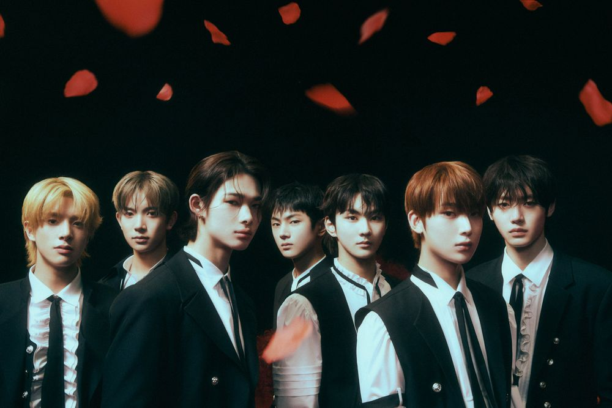
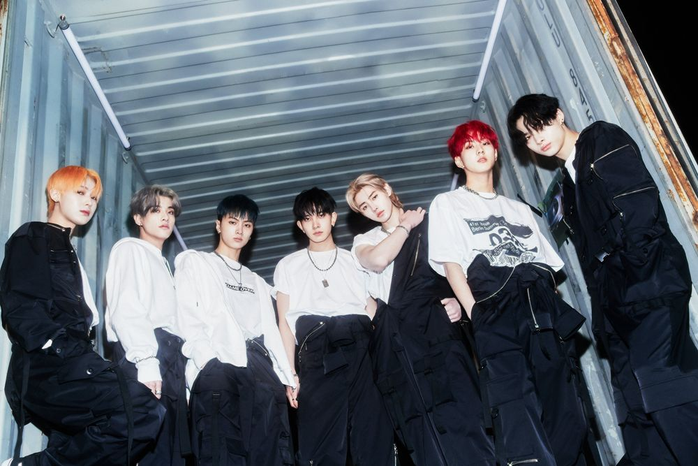

ENHYPEN is a South Korean boy band formed by BE:LIFT Lab, a joint venture between Hybe Corporation and CJ ENM, through a survival competition show, I-Land. The group consist of seven multinational members JUNGWON, HEESEUNG, JAY, JAKE, SUNGHOON, SUNOO, and NI-KI. They debuted on November 30th, 2020, and are known for their dynamic and highly synchronized performances, which have garnered them international praise as the “4th Generation Hot Icons” and “Global K-pop Rising Stars.” Their fandom name is ENGENE, which is derived from the words “engine” and “gene.”
4th Generation Hot Icon, Global K-pop Rising Stars, 4th Generation Emerging Artists, The New Phenomenon Of 4th Generation Idols, The New Kpop Destination, Powerhouses of Kpop, Kpop Heroes, Kings of Next Generation Kpop, Kpop’s Present and Future
 BELIFT LAB Inc.
BELIFT LAB Inc.